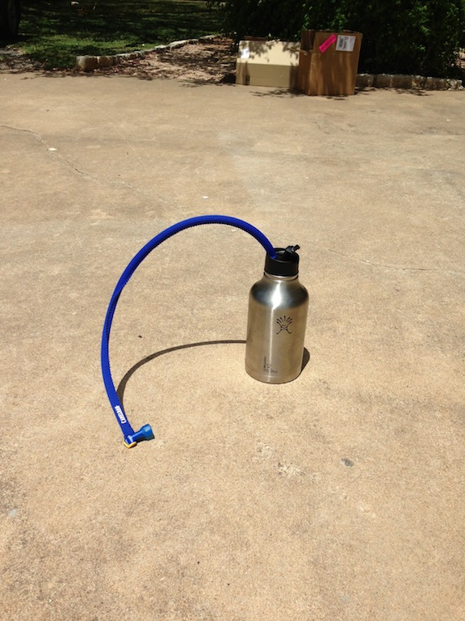
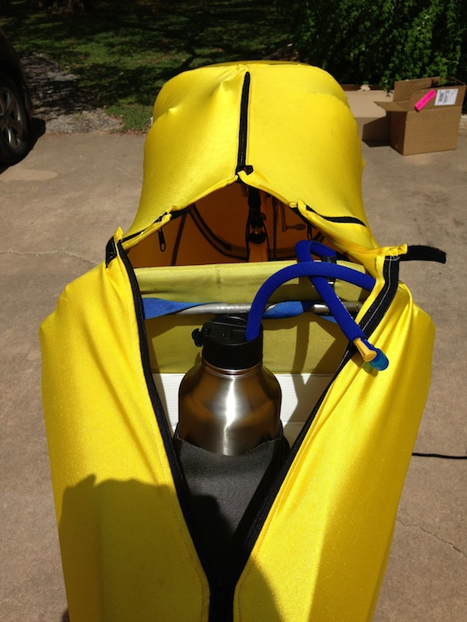

Hydration for a HOT Texas summer - 104 degrees
09 Aug 2013
Last summer in Texas I had over 30 hours of riding in temperatures above 100 degrees and several hours riding in temps above 110.
This summer in late August I’m planning on taking the F-40 to HHH (Hotter’n Hell Hundred miler) in Wichita Falls Texas. The temps are expected to be around 110 in the afternoon.
Well they now sell 64 oz Wide Mouth Insulated Stainless Steel Growlers for beer.
I bought one of these and did a Texas sun test yesterday. Yesterday noon I filled the growler up with ice and water and set is outside on the driveway in the afternoon sun and heat. Most of yesterday afternoon the temps were above 100 degrees and the outside of the growler became very hot to touch.

I left the growler in the garage overnight and this morning I took it as is on my 20 mile ride. It still had ice in it when I started riding. Here is a picture of it installed on the F-40:

The tail of the F-40 basically has a storage area that I have installed a top of the rack saddle bag. Then I cut a hole in the front of the saddle bag that I can slip the growler in and out.
Here it is a day later and the growler still has ice in it!
Looks like I have a solution for HHH.
The only negative is that it probably weighs 5 pounds loaded with ice and water.